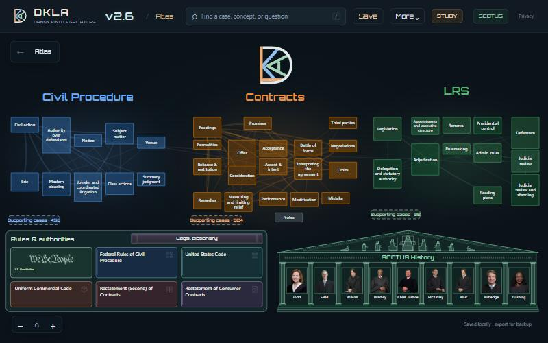
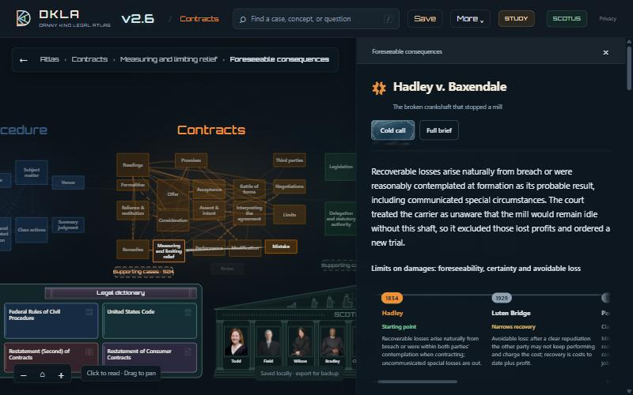

How to use the atlas
Three first-year courses as one map: every case briefed, every rule linked to its source, and tools for recall. The first half shows where things are. The second half is how to work with it.
Where things are
The map

Civil Procedure is blue, Contracts orange, LRS (Legislation and the Regulatory State) green. Click a tile to open the subject; its topics appear, then the cases inside each topic. The lines between tiles are real connections between their cases.
Scroll to move one level in or out. Drag to pan. ⌂ at the bottom left fits the current area, ← goes back one view, and the trail beside it (Atlas › Contracts › …) jumps to any level above.
Under the courses: Supporting cases lists the cases each course cites but does not assign, Notes is your own workbench, and the two wide blocks are the source library and the Court (sections 5 and 6).
A case

Click a case card. The panel reads top to bottom in the order you would want it in class:
- The takeaway, in plain English, before anything else.
- The doctrine timeline, when the case is a step in one: what came before, what this case changed, what came after. Click any step to go there.
- The brief: Parties, Procedure, Material Facts, Issue, Holding, Reasoning. Each opens on its own.
- Connections to other entries, each with a sentence saying why, and Explanation and sources behind it.
- Sources: chips that open the casebook page, the opinion or the brief PDF at the right page.
Full brief opens the complete brief. Cold call opens the narrated version (section 4). Terms listed at the bottom open the legal dictionary. Esc closes the panel.
Rate as you read. Clean, Patchy or Blank at the bottom of a case is the same rating the drill and Progress in section 7 keep, so you can see what is still weak.
Search
Press / or Ctrl+K and type. Typos and word order do not matter. One box covers case names, concepts, subjects, dictionary terms and the sources on file, so Rule 12, UCC 2-207, § 1367, Restatement 90 and mirror image all work.
Search by the thing you half remember: a fact (“crankshaft”), a party, or the question the case answers.
Cold Call
Every assigned case has a Cold Call: the case told as a short sequence of numbered beats, from what happened, through what each side argued, to what the court decided and what it left open. Each beat cites the pages of the opinion it rests on and links to the full brief.
Use it the night before class. If you can retell the beats in order without looking, you can answer the questions a professor opens with.
Rules & authorities
Six books: the Constitution, the Federal Rules of Civil Procedure, the United States Code, the Uniform Commercial Code, the Restatement (Second) of Contracts and the Restatement of Consumer Contracts. Open one to read a provision in full, next to the cases you are studying.
It works in the other direction too: a case lists its Authorities cited, and each one opens the provision. The Legal dictionary bar above the books holds 5,583 terms, each with the entries that use it.
SCOTUS History
Click the building, or SCOTUS in the top bar. Inside:
- Court by date. Pick any day since 1789 and see who sat.
- Seat lineages. Each seat traced from its first occupant to the present. Clicking a justice on the map opens that seat. The label under each portrait names the seat by its first occupant.
- Case votes. For every Supreme Court case in the atlas: who joined the judgment, who wrote, who dissented.
From a Supreme Court case’s reading panel, the vote line opens that case here, and ribbons on the map tie the case to the bench that decided it.
Study
- Drill. A case name with the rest hidden. Reveal the issue, the holding, the reasoning, then rate yourself.
- Pairs. Two cases that are easy to confuse, side by side.
- Sheets. Every rule in a subject on one printable page.
- Progress. What you have rated, and a sync code that copies your ratings to another device.
How to work with it
Working methods
Preparing for class
More → Reading assignments lists each class’s reading. For each case: read the takeaway, run the Cold Call, then open only the brief sections you could not have stated yourself. Rate it before you close it.
Building an outline
An outline is a subject’s rules in order, with the cases that mark each turn. The atlas already holds both halves:
- More → Doctrine timelines gives the order: how personal jurisdiction, Erie, consideration or deference moved, case by case, with one line on what each changed.
- STUDY → Sheets gives the rules for a subject on one page. Print it and annotate.
- More → Browse subjects is the same map as a plain list, when you want a table of contents.
Seeing how two things relate
With a case open, ribbons run to everything it connects to; a pill at the far end names entries that are off screen. For two entries that are not directly linked, More → Find a connection path finds the chain between them. This is the fastest way to answer “how does this case bear on that doctrine,” which is most of an issue-spotter.
Checking a claim against the source
Nothing here asks to be taken on trust. Reporter citations in a brief are links to the opinion. The source chips open the casebook, supplement or opinion PDF at the page. More → Open textbook opens the assigned books directly, and More → Sources and coverage says exactly what each course includes and what it does not.
The week before an exam
- Drill a subject until nothing is Blank.
- Run Pairs for that subject. Confusing two similar cases costs more points than forgetting one.
- Read the subject’s timeline once more, top to bottom, and say aloud what each step changed.
- Print the sheet.
Making it yours
Each entry has Your notes and editing. More → Add an entry and Add a connection put your own material on the map, and Undo last edit takes the last change back. Everything is saved in this browser. Save downloads a complete copy of the atlas with your work in it, which is also your backup; More → Save & import brings one back in.
Offline. The atlas works without a connection after its first load. A full brief you have opened once stays available; one you have never opened needs a connection the first time.
Keys
| Key | Action |
|---|---|
| / or Ctrl+K | Search |
| Esc | Close the panel, dialog or menu |
| Alt+← | Previous view |
| Shift+D | Recall drill |
| Space or Enter | Drill: reveal the next part |
| 1 2 3 | Drill: rate the card |
| H / S / A | Drill: hint, skip, open on the atlas |
| Ctrl+P | Print the open entry on its own |